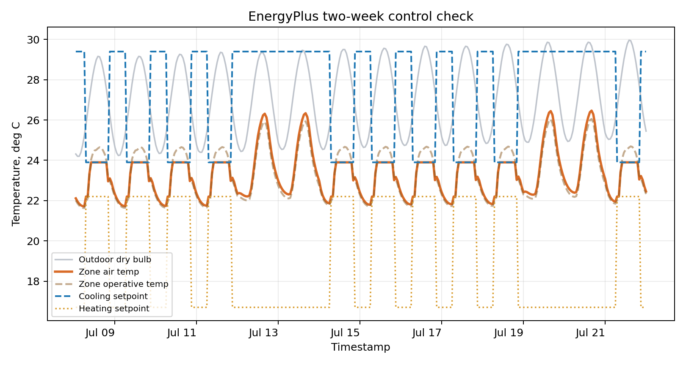

Course Resources
Workflow Tracks, Templates, and Reuse Map
Resource Logic
Use the lightest setup that can produce a credible workflow for your design decision.
The course does not reward technical intimidation. It rewards a clear relationship between:
flowchart LR
A[Design decision] --> B[Variable / evidence]
B --> C[Workflow]
C --> D[Output]
D --> E[Threshold / recommendation]Templates
Reusable worksheets for each assignment and weekly Session 2. Jump to templates →
Starter Kits
Pathway starting points: spreadsheet, GIS, Python, proxy simulation, AI-assisted fact-checking, and GH bridge notes. Jump to starter kits →
ML Primer
The 12 Principles of ML for architecture, in plain language. Open the primer →
Lectures & Notebooks
ML-to-Python overview and the two analysis notebooks. Jump to supporting materials →
Core Templates
| Template | Use |
|---|---|
| Project Reasoning Check-In | weekly Session 2 Slack upload and round-table note |
| Total Recall Board | A1 past studio evidence audit |
| Tool Translation Matrix | A2 workflow route comparison |
| A4 Branch Declaration | Week 6 route and scope lock |
| AI-Assisted Fact-Checking Card | AI-assisted claim, relationship, and workflow checks |
| Final Package Checklist | A4 Practice Case, Research Brief, Object Card, Capsule |
Starter Kits
Starter kits are tracked in Starter Kits.
Route Readiness
Use this table to choose a route without over-reading the tool promise.
| Route | Launch status | What is available now | Best use |
|---|---|---|---|
| Spreadsheet thresholds | fully supported | live .xlsx, preview, CSV export, filled example |
transparent decisions, thresholds, sensitivity |
| GIS spatial comparison | fully supported | GeoJSON data, geopandas script, map, scored CSV, selected site export | site/context/access decisions |
| Python / notebook analysis | supported starter route | facade decision script, data, plot, CSV, existing notebooks | repeated analysis, charts, reusable logic |
| Proxy simulation | supported starter route | facade heat proxy script, scenarios, chart, scores | bounded performance assumptions when full simulation is too heavy |
| AI-assisted fact-checking / workflow support | supported companion route | prompt log example and verified function | fact checks, relationship checks, and small code/workflow components |
| GH / parametric workflow | bridge now; direct .gh / .ghx starter files in progress |
CSV handoff notes and variant logs now; native GH/GHX starter files planned | students who already have working GH and want to connect course outputs |
Spreadsheet Thresholds
Live decision matrix: edit thresholds, watch status colors and scores change, then export a GH-readable CSV.
GIS Spatial Comparison
HKU micro-walkability sample: candidate sites, synthetic grocery points, 300m catchments, green-space proximity, and noise exposure.

EnergyPlus Two-Week Check
Stock controlled model, synthetic HK summer weather, July 8-21 run, and visible setpoint/temperature outputs before GH translation.

Current starter-kit links:
- GH Parametric Variants
- Preset Simulation / Proxy Test — Week 5 proxy + optional EnergyPlus CLI case: EnergyPlus guide, runner script, checked output CSV
- AI-Assisted Fact-Checking + Workflow Support
- Spreadsheet Thresholds — Week 3 live workbook: open
.xlsx, CSV export - GIS Spatial Comparison — Week 4 HKU micro-walkability demo: preview, scores
Students are expected to choose from the routes that are viable for their own setup. GH-native work is welcome when a student already has a working installation, but it is not required.
Lectures and Supporting Materials
| Material | Use |
|---|---|
| ML Primer · 12 Principles | plain-language ML mental model, skinned to the course visual language |
| ML for Architecture — full deck (PDF) | the detailed version: pipeline, diffusion, segmentation, surrogate modeling, GH/Honeybee tooling |
| ML to Python Overview | bridge from ML concepts to runnable Python |
| Python + ML Basics | starter notebook |
| Architecture Viz + Analysis | starter notebook |
Supported Workflow Tracks
GH / Parametric Workflow
Best when the decision depends on geometry variation or option families.
Typical outputs:
- GH definition
- exported variants
- parameter table
- comparison chart or object card
Current status: bridge now; direct GH/GHX files in progress. The course website will include native .gh / .ghx starter files once the GH/Rhino authoring setup is stable. Until then, students may use GH if they already have a working setup; otherwise they should use spreadsheet, GIS, Python, proxy simulation, or AI-assisted fact-checking routes and export tables or geometry files that can later feed GH.
BIM/BEM and Simulation
Best when the decision depends on building performance, model translation, daylight, energy, facade logic, or environmental assumptions.
Typical outputs:
- model-translation critique
- preset simulation output
- sensitivity table
- performance threshold
Current status: supported through BIM/BEM literacy, a runnable proxy simulation kit, and an optional EnergyPlus two-week CLI case. Full Ladybug/Radiance walkthroughs remain optional extensions, not launch requirements.
Week 5 live materials:

GIS / Spatial Workflow
Best when the decision depends on site, access, zoning, context, exposure, or spatial comparison.
Typical outputs:
- map
- buffer/overlay output
- spatial summary table
- exported design criteria
Current status: runnable GeoJSON demo and generated preview are present.
Week 4 live materials:
Python / Notebook Workflow
Best when the decision depends on repeated data analysis, visualization, or lightweight modeling.
Existing notebooks:
notebooks/01_python_ml_basics.ipynbnotebooks/02_arch_viz_analysis.ipynb
Current status: supported starter route with existing notebooks and a runnable facade-decision script.
AI-Assisted Fact-Checking + Workflow Support
Best when AI can help interpret a fuzzy relationship, draft a small workflow component, structure a prompt sequence, or act as a first-pass fact-checking companion.
Required documentation:
- prompt log
- generated claim, relationship, or workflow output
- fact-check notes
- relationship-check notes
- manual test or calculation
- reproducibility note
- disclosure statement
Current status: supported companion route with a prompt log example and a verified Python function. It is intended for bounded workflow help, fact-checking, and relationship stress-testing, not unverified design outsourcing.
Spreadsheet / Low-Code Workflow
Best when the decision depends on transparent comparison, sensitivity, or threshold logic.
Typical outputs:
- evidence table
- decision matrix
- sensitivity chart
- threshold statement
Current status: fully supported through a live workbook, preview, and CSV export.
Week 3 live materials:
Setup Ladder
| Level | Setup |
|---|---|
| Everyone | Excel or Google Sheets, browser, PDF/image export |
| GIS route | QGIS, project layers, export workflow |
| Python route | Jupyter Notebook, Anaconda/Miniconda or Colab |
| GH bridge / optional workgroup | Rhino + Grasshopper only if already working; direct GH/GHX starter files are planned but currently WIP |
| Simulation route | no-install proxy kit for everyone; optional EnergyPlus CLI case when installed |
| AI-assisted companion route | approved AI tool access, prompt log, fact/relationship checks, verification notes |
Archive and Reuse
The previous offering is preserved in:
archive/2025-26-current-offering-source/
High-value reusable materials:
- Week 1 evidence audit material
- Week 5 BIM/BEM deck
- GIS overview material
- Python and visualization notebooks
- object card / figure rescue content
Future extensions:
- GH starter workflows
- full preset simulation walkthrough
- deeper AI-assisted architecture fact-checking and workflow examples
- final package templates in downloadable format